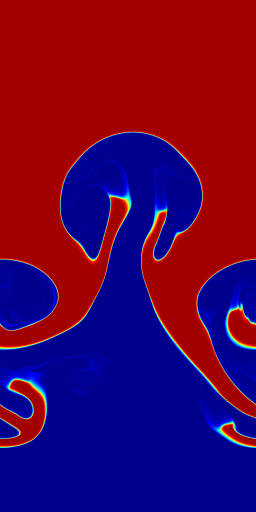
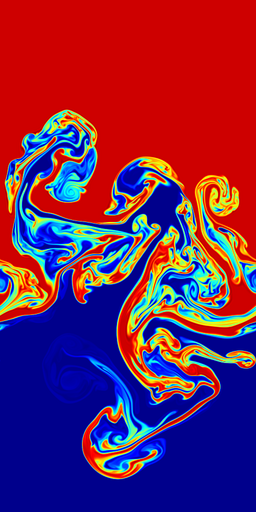
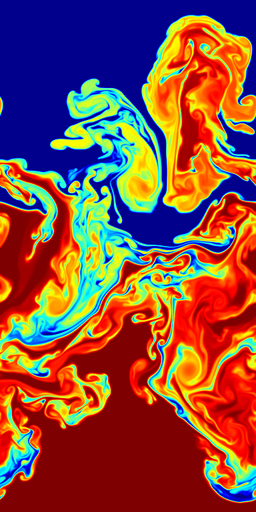
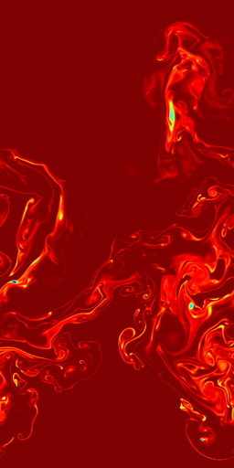
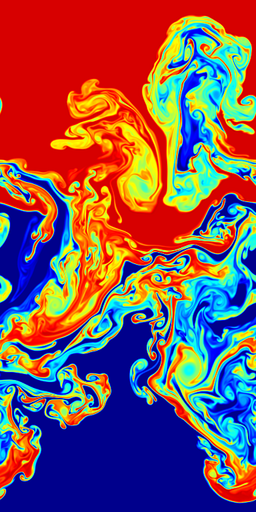
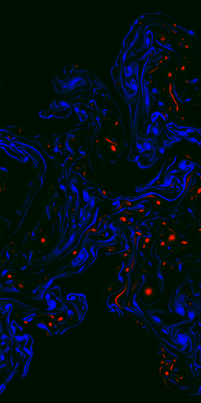
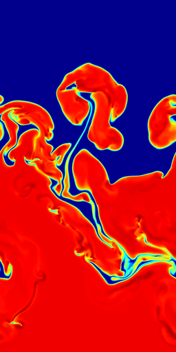
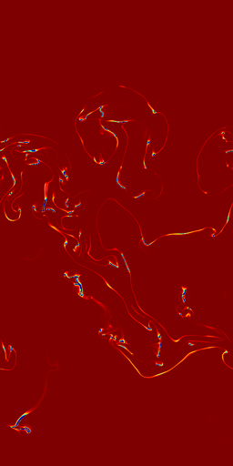
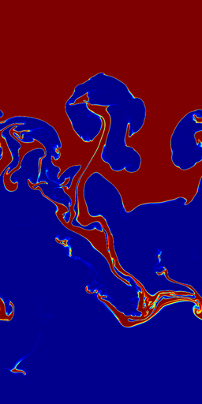
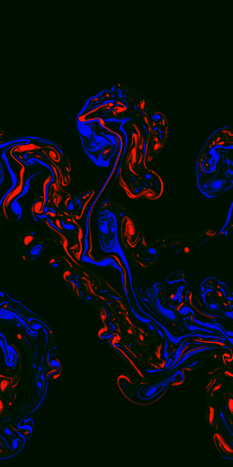

(Bell, J. B., Day, M. S., Rendleman, C. A., Woosley, S. E. & Zingale, M. A. 2004, ApJ, 608, 883.)
in collaboration with the CCSE/LBL group.
A Type Ia supernova explosion likely begins as a nuclear runaway near the center of a carbon-oxygen white dwarf. The outward propagating flame is unstable to the Landau-Darrieus, Rayleigh-Taylor, and Kelvin-Helmholtz instabilities, which serve to accelerate it to a large fraction of the speed of sound. We investigate the Rayleigh-Taylor unstable flame at the transition from the flamelet regime to the distributed-burning regime, around densities of 107 g/cc, through detailed, fully resolved simulations.
| 1.5 x 107 g/cc | 107 g/cc | 6.67 x 106 g/cc |
|---|---|---|
|  |  | |
A low Mach number, adaptive mesh hydrodynamics code is used to achieve the necessary resolution and long time scales. As the density is varied, we see a fundamental change in the character of the burning--at the low end of the density range (right) the Rayleigh-Taylor instability dominates the burning, and we there is no clean interface between fuel and ash. At the high end the burning suppresses the instability (left), and we are in the flamelet regime, characterized by a sharp interface separating fuel and ash. In all cases, significant acceleration of the flame is observed, limited only by the size of the domain we are able to study.
Movies of the 6.67 x 106 g/cc 768 cm wide R-T flame
|  |  |  |  |
| temperature | carbon destruction rate | carbon mass fraction | vorticity |
| [WMV7 AVI] [MPEG-2] [MPEG-1] | [WMV7 AVI] [MPEG-2] [MPEG-1] | [WMV7 AVI] [MPEG-2] [MPEG-1] | [WMV7 AVI] [MPEG-2] [MPEG-1] |
movies of the higher density runs are available at the CCSE site.
Simulations of a fully resolve 1.5 x 107 g/cc RT unstable carbon flame in a white dwarf. The domain is 216 x 432 cm (effective, fine grid size is 2048 x 4096 zones). The flame is moving up, and fresh fuel is fed in at the top at the laminar flame velocity.
Movies of the 1.5 x 107 g/cc 216 cm wide R-T flame
|  |  |  |  |
| temperature | carbon destruction rate | carbon mass fraction | vorticity |
| [WMV7 AVI] | [WMV7 AVI] | [WMV7 AVI] | [WMV7 AVI] |
These calculations were carried out on the NERSC IBM/SP seaborg. This research is supported by DOE grant No. DE-FC02-01ER41176 to the Supernova Science Center/UCSC.
notes:
AVI movies encoded with mencoder 0.90-4.0 from 32-bit PNGs using:
mencoder "mf://plt????.C21_med.png" -ovc lavc -lavcopts vcodec=wmv1:vbitrate=16000 -o rt_6.67e6_yc12.avi -mf w=256:h=512:fps=25:type=png
MPEG-2 movies encoded with mjpegtools 1.6.1 using:
cat *C21_med.ppm | ppmtoy4m -F25:1 | mpeg2enc -f 0 -b 16000 -V
500 -q 4 -4 1 -2 1 -o rt_6.67e6_yc12.mpg
MPEG-1 movies encoded with mpeg_encode using this parameter file